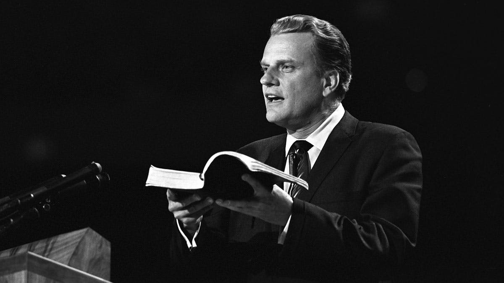

Billy Graham
The man of God

Evangelist Billy Graham the man who preached the Gospel of Jesus to more people in person than anyone in the history of Christianity
Here's a timeline of Billy Graham's life:
- 1918 - Born on November 7
- 1934 - He come to Christ during a series of revival meetings that Ham led in Charlotte
- 1937 - He preach his first sermon. During this time, he receive God's calling.
- 1939 - Ordained to the ministry by Peniel Baptist Church, Palatka, Fla
- 1940 - Graduated, Florida Bible Institute
- 1941 - Pastor, The United Gospel Tabernacle, Wheaton, Illinois
- 1943 - Graduated from Wheaton College in Wheaton, Illinois, with a degree in anthropology
- 1943 - Married to Ruth Bell, his Wheaton classmate
- 1943 - Pastor, The Village Church of Western Springs until 1945
- 1945 - Charter Vice President, Youth for Christ International, Chicago, III until 1950
- 1947 - President, Northwestern Schools, consisting of three institutions: a liberal arts college, Bible school and theological seminary until 1952
- 1947 - First Billy Graham evangelistic campaign, held September 13-21, attended by 6000 people
- 1949 - Los Angeles crusade, the turning point of Billy's crusade. Graham became a national figure. The 3 weeks crusade became 8 weeks
- 1950 - Founded Billy Graham Evangelistic Association, Minneapolis, Minn and began weekly "Hour of Decision" radio program
- 1954 - London crusade
- 1957 - New York crusade, the longest Graham's evangelistic crusade that lasted 16 weeks.
- 1973 - South Korea crusade, the largest audience in the history of Graham's ministry assembled at Yoido Plaza in Seoul, 1.1million people
- 1977 - Philippine crusade
- 2001 - Lead a service at Washington National Cathedral attended by the president. Held on september 14 only three days after the World Trade Center attacks or September 11 attacks
- 2005 - Billy's last crusade in New York City and his retirement passing the leadership to his son Franklin Graham. Over 58 years, Graham conducted 417 crusades and reached more than 215 million people in over 185 countries and territories
- 2013 - In his 95th birthday, a one last sermon was released on DVD and played worldwide between November 7-10. Graham's estimated lifetime audience, including radio and television broadcast, topped 2.2 billion
- 2018 - Died on February 21 at the age of 99. Billy Graham was one of the most admired man, he became spiritual adviser to 12 US presidents and authored 40 books.
Be inspired more from the life of man of God, just click here.